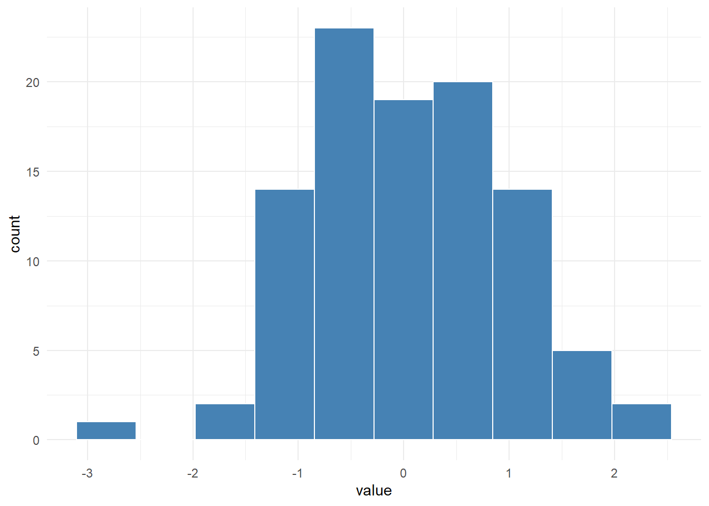
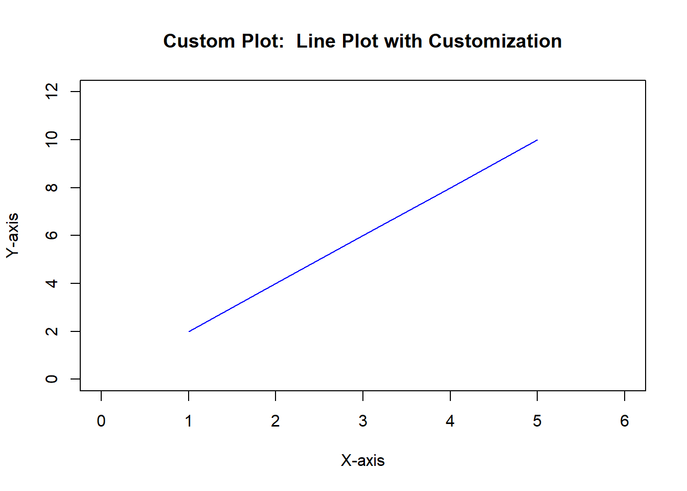
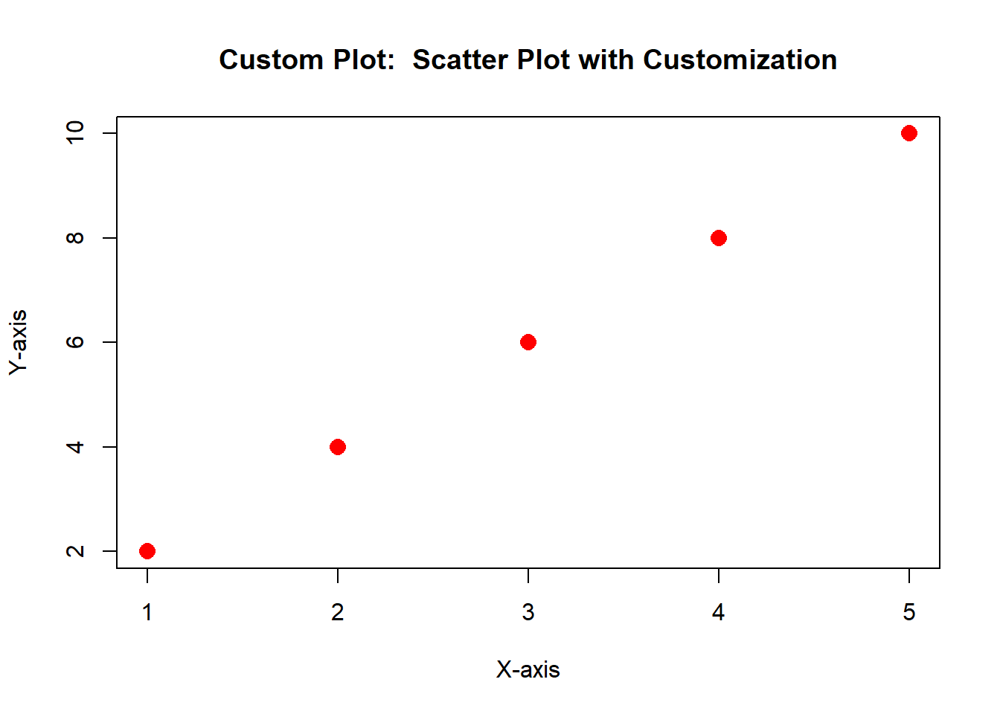

my_function <- function(arg1, arg2, ...) {
# Function body
# Perform operations using arg1, arg2, ...
return(result)
}Introduction
R is a powerful and versatile programming language widely used in data analysis, statistics, and visualization. One of the key features that make R so flexible is its ability to create functions. Functions in R allow you to encapsulate a set of instructions into a reusable and modular block of code, promoting code organization and efficiency. Much like a well-engineered machine, where gears work together seamlessly, functions provide the backbone for modular, efficient, and structured code. As we delve into the syntax, best practices, and hands-on examples, envision the gears turning in unison, each function contributing to the overall functionality of your programs. In this blog post, we will delve into the world of writing functions in R, exploring the syntax, best practices, and showcasing interesting examples.
Basics of Writing Functions in R
Syntax:
In R, a basic function has the following syntax:
my_function: The name you assign to your function.arg1, arg2, ...: Arguments passed to the function.return(result): The result that the function will produce.
Example:
Let’s create a simple function that adds two numbers:
# Define a function named 'square'
square <- function(x) {
result <- x^2
return(result)
}
# Usage of the function
squared_value <- square(4)
print(squared_value)[1] 16Now, let’s break down the components of this example:
Function Definition:
squareis the name assigned to the function.
Parameter:
xis the single parameter or argument that the function expects. It represents the number you want to square.
Function Body:
- The body of the function is enclosed in curly braces
{}. Inside,result <- x^2calculates the square ofx.
- The body of the function is enclosed in curly braces
Return Statement:
return(result)specifies that the calculated square is the output of the function.
Usage:
square(4)is an example of calling the function with the value 4. The result is stored in the variablesquared_value.
Print Output:
print(squared_value)prints the result to the console, and the output is16.
This function takes a single argument, squares it, and returns the result. You can customize and use this type of function to perform specific operations on individual values, making your code more modular and readable.
Advanced Function Features
Default Arguments
“Default Arguments” refers to a feature in R functions that allows you to specify default values for function parameters. Default arguments provide a predefined value for a parameter in case the user does not explicitly provide a value when calling the function.
power_function <- function(x, exponent = 2) {
result <- x ^ exponent
return(result)
}In this example, we define a function called power_function that takes two parameters: x and exponent. Here’s a step-by-step explanation:
Function Definition:
power_functionis the name of the function.
Parameters:
xandexponentare the parameters (or arguments) that the function accepts.
Default Value:
exponent = 2indicates that if the user does not provide a value forexponentwhen calling the function, it will default to 2.
Function Body:
- The function body is enclosed in curly braces
{}and contains the code that the function will execute.
- The function body is enclosed in curly braces
Calculation:
- Inside the function body,
result <- x ^ exponentcalculates the result by raisingxto the power ofexponent.
- Inside the function body,
Return Statement:
return(result)specifies that the calculated result will be the output of the function.
Now, let’s see how this function can be used:
# Usage
power_of_3 <- power_function(3)
print(power_of_3) [1] 9power_of_3_cubed <- power_function(3, 3)
print(power_of_3_cubed) [1] 27Here, we demonstrate two usages of the power_function:
Without Providing
exponent:power_function(3)uses the default value ofexponent = 2, resulting in3 ^ 2, which is 9.
Providing a Custom
exponent:power_function(3, 3)explicitly provides a value forexponent, resulting in3 ^ 3, which is 27.
In summary, the default argument (exponent = 2) makes the function more flexible by providing a sensible default value for the exponent parameter, but users can override it by supplying their own value when needed.
Variable Arguments
In R, the ... (ellipsis) allows you to work with a variable number of arguments in a function, offering flexibility and convenience. This magical feature empowers you to create functions that can handle different inputs without explicitly defining each one.
Properties of ...:
Variable Number of Arguments:
...allows you to accept an arbitrary number of arguments in your function.
Passing Arguments to Other Functions:
- You can pass the ellipsis (
...) to other functions within your function, making it extremely versatile.
- You can pass the ellipsis (
Let’s break down the code example:
sum_all <- function(...) {
numbers <- c(...)
result <- sum(numbers)
return(result)
}Here’s a step-by-step explanation of the code:
Function Definition:
sum_allis the name of the function.
Variable Arguments:
...is used as a placeholder for a variable number of arguments. It allows the function to accept any number of arguments.
Combining Arguments into a Vector:
numbers <- c(...)combines all the arguments passed to the function into a vector namednumbers.
Summation:
result <- sum(numbers)calculates the sum of all the numbers in the vector.
Return Statement:
return(result)specifies that the calculated sum will be the output of the function.
Now, let’s see how this function can be used:
# Usage
total_sum1 <- sum_all(1, 2, 3, 4, 5)
print(total_sum1) [1] 15total_sum2 <- sum_all(10, 20, 30)
print(total_sum2) [1] 60In the usage examples:
sum_all(1, 2, 3, 4, 5)passes five arguments to the function, and the sum is calculated as1 + 2 + 3 + 4 + 5, resulting in 15.sum_all(10, 20, 30)passes three arguments, and the sum is calculated as10 + 20 + 30, resulting in 60.
This function allows flexibility by accepting any number of arguments, making it suitable for scenarios where the user may need to sum a dynamic set of values. The ellipsis (...) serves as a convenient mechanism for handling variable arguments in R functions.
Multiple Arguments in R Functions
Using multiple arguments when writing a function in the R programming language means accepting and working with more than one input parameter.. In R, functions can be defined to take multiple arguments, allowing for greater flexibility and customization when calling the function with different sets of data.
Here’s a general structure of a function with multiple arguments in R:
my_function <- function(arg1, arg2, ...) {
# Function body
# Perform operations using arg1, arg2, ...
return(result)
}Let’s break down the components:
my_function: The name you assign to your function.arg1, arg2, ...: Parameters or arguments passed to the function....: The ellipsis (...) represents variable arguments, allowing the function to accept a variable number of parameters.
Here’s a more concrete example:
calculate_sum <- function(x, y) {
result <- x + y
return(result)
}
# Usage
sum_result <- calculate_sum(3, 5)
print(sum_result) [1] 8In this example, the calculate_sum function takes two arguments (x and y) and returns their sum. You can call the function with different values for x and y to obtain different results.
# Usage
result1 <- calculate_sum(10, 15)
print(result1)[1] 25result2 <- calculate_sum(-5, 8)
print(result2)[1] 3This flexibility in handling multiple arguments makes R functions versatile and adaptable to various tasks. You can design functions to perform complex operations or calculations by allowing users to input different sets of data through multiple parameters.
Returning Multiple Outputs from a Function in R
In R, functions traditionally return a single object. However, in many real-world data analysis workflows, we often need a function to return multiple outputs simultaneously — such as several statistics, model results, or diagnostic values.
To achieve this, the most common approach in R is to return a named list. This provides flexibility, structure, and easy access to individual components.
Below are some practical examples demonstrating this concept.
Example 1: Returning Multiple Summary Statistics
Let’s say we want to compute the mean, median, and standard deviation of a numeric vector:
summary_stats <- function(x) {
mean_x <- mean(x, na.rm = TRUE)
median_x <- median(x, na.rm = TRUE)
sd_x <- sd(x, na.rm = TRUE)
return(list(
mean = mean_x,
median = median_x,
sd = sd_x
))
}
data <- c(10, 20, 30, 40, 50)
result <- summary_stats(data)
result$mean # 30[1] 30result$median # 30[1] 30result$sd # 15.81[1] 15.81139What’s happening?
The function
summary_stats()returns a named list with three numeric values.You can access each result using
$, e.g.,result$sd.
Example 2: Returning a Data Frame and Plot Together
Sometimes we want a function to return both a table and a visualization.
library(ggplot2)
analyze_distribution <- function(x) {
df <- data.frame(
value = x,
z = scale(x)
)
plot <- ggplot(df, aes(x = value)) +
geom_histogram(bins = 10, fill = "steelblue", color = "white") +
theme_minimal()
return(list(
table = df,
histogram = plot
))
}
data <- rnorm(100)
output <- analyze_distribution(data)
head(output$table) # Shows the first few rows of the table value z
1 1.2018165 1.2433736
2 0.1627978 0.1343999
3 -1.1448543 -1.2612939
4 0.1921125 0.1656883
5 -0.6020712 -0.6819663
6 0.4271903 0.4165934output$histogram # Displays the ggplot2 histogram
Takeaways:
This function returns both a
data.frameand aggplotobject.This is especially useful for reporting functions in packages or Shiny applications.
Bonus Tip: Named Lists vs. Tibbles
While lists are flexible, in some modeling contexts (e.g., when nesting or mapping), it can be useful to wrap outputs in a tibble:
library(tibble)
multi_return <- function(x) {
tibble(
input = list(x),
summary = list(summary(x)),
sd = sd(x)
)
}In summary; R does not support multiple return values like Python’s tuple unpacking, but lists and tibbles allow us to simulate this pattern elegantly. Whether you are building utility functions or modularizing a complex pipeline, returning multiple outputs as a single structured object is both powerful and idiomatic in R.
More Examples
Mean of a Numeric Vector
Let’s create a simple function that calculates the mean of a numeric vector in R. The function will take a numeric vector as its argument and return the mean value.
# Define a function named 'calculate_mean'
calculate_mean <- function(numbers) {
# Check if 'numbers' is numeric
if (!is.numeric(numbers)) {
stop("Input must be a numeric vector.")
}
# Calculate the mean
result <- mean(numbers)
# Return the mean
return(result)
}
# Usage of the function
numeric_vector <- c(2, 4, 6, 8, 10)
mean_result <- calculate_mean(numeric_vector)
print(mean_result)[1] 6In this function we also check the input validation. if (!is.numeric(numbers)) checks if the input vector is numeric. If not, an error message is displayed using stop().
Calculate Exponential Growth
Let’s create a function to calculate the exponential growth of a quantity over time. Exponential growth is a mathematical concept where a quantity increases by a fixed percentage rate over a given period.
Here’s an example of how you might write a function in R to calculate exponential growth:
# Define a function to calculate exponential growth
calculate_exponential_growth <- function(initial_value, growth_rate, time_period) {
final_value <- initial_value * (1 + growth_rate)^time_period
return(final_value)
}
# Usage of the function
initial_value <- 1000 # Initial quantity
growth_rate <- 0.05 # 5% growth rate
time_period <- 3 # 3 years
final_result <- calculate_exponential_growth(initial_value, growth_rate, time_period)
print(final_result) [1] 1157.625Explanation:
The function
calculate_exponential_growthtakes three parameters:initial_value(the starting quantity),growth_rate(the percentage growth rate per period), andtime_period(the number of periods).Inside the function, it calculates the final value after the given time period using the formula for exponential growth:
\[ Final Value = Initial Value\times (1+Growth Rate)^{TimePeriod} \]
The calculated final value is stored in the variable
final_value.The function returns the final value.
In the usage example:
The initial quantity is set to 1000.
The growth rate is set to 5% (0.05).
The time period is set to 3 years.
The function is called with these values, and the result is printed to the console.
This is just one example of how you might use a function to calculate exponential growth. Depending on your specific requirements, you can modify the function and parameters to suit different scenarios.
Calculate Compound Interest
Suppose that we want to create a function to calculate compound interest over time. Compound interest is a financial concept where interest is calculated not only on the initial principal amount but also on the accumulated interest from previous periods. The formula for compound interest is often expressed as:
\[ A= P\times(1+\frac{r}{n})^{nt} \]
where:
\(A\) is the amount of money accumulated after \(n\) years, including interest.
\(P\) is the principal amount (initial investment).
\(r\) is the annual interest rate (as a decimal).
\(n\) is the number of times that interest is compounded per unit \(t\) (usually per year).
\(t\) is the time the money is invested or borrowed for, in years.
Here’s an example of how you might write a function in R to calculate compound interest:
# Define a function to calculate compound interest
calculate_compound_interest <- function(principal, rate, time, compounding_frequency) {
amount <- principal * (1 + rate/compounding_frequency)^(compounding_frequency*time)
interest <- amount - principal
return(interest)
}
# Usage of the function
initial_principal <- 1000 # Initial investment
annual_interest_rate <- 0.05 # 5% annual interest rate
investment_time <- 3 # 3 years
compounding_frequency <- 12 # Monthly compounding
compound_interest_result <- calculate_compound_interest(initial_principal, annual_interest_rate, investment_time, compounding_frequency)
print(compound_interest_result)[1] 161.4722Explanation:
The function
calculate_compound_interesttakes four parameters:principal(the initial investment),rate(the annual interest rate),time(the time the money is invested for, in years), andcompounding_frequency(the number of times interest is compounded per year).Inside the function, it calculates the amount using the compound interest formula.
It then calculates the interest earned by subtracting the initial principal from the final amount.
The function returns the calculated compound interest.
In the usage example:
The initial investment is set to $1000.
The annual interest rate is set to 5% (0.05).
The investment time is set to 3 years.
Interest is compounded monthly (12 times per year).
The function is called with these values, and the result (compound interest) is printed to the console.
This example illustrates how you can use a function to calculate compound interest for a given investment scenario. Adjust the parameters based on your specific financial context.
Custom Plotting Function
Let’s enhance the custom plotting function using the ellipsis (...) to allow for additional customization parameters. The ellipsis allows you to pass a variable number of arguments to the function, providing more flexibility.
# Define a custom plotting function with ellipsis
custom_plot <- function(x_values, y_values, ..., plot_type = "line", title = "Custom Plot") {
plot_title <- paste("Custom Plot: ", title)
if (plot_type == "line") {
plot(x_values, y_values, type = "l", col = "blue", main = plot_title, xlab = "X-axis", ylab = "Y-axis", ...)
} else if (plot_type == "scatter") {
plot(x_values, y_values, col = "red", main = plot_title, xlab = "X-axis", ylab = "Y-axis", ...)
} else {
warning("Invalid plot type. Defaulting to line plot.")
plot(x_values, y_values, type = "l", col = "blue", main = plot_title, xlab = "X-axis", ylab = "Y-axis", ...)
}
}
# Usage of the custom plotting function with ellipsis
x_data <- c(1, 2, 3, 4, 5)
y_data <- c(2, 4, 6, 8, 10)
# Create a line plot with additional customization (e.g., xlim, ylim)
custom_plot(x_data, y_data, plot_type = "line", xlim = c(0, 6), ylim = c(0, 12), title = "Line Plot with Customization")
# Create a scatter plot with additional customization (e.g., pch, cex)
custom_plot(x_data, y_data, plot_type = "scatter", pch = 16, cex = 1.5, title = "Scatter Plot with Customization")
Explanation:
The
...in the function definition allows for additional parameters to be passed to theplotfunction.Inside the function, the
plotfunction is called with the...argument, allowing any additional customization options to be applied to the plot.In the usage examples, additional parameters such as
xlim,ylim,pch, andcexare passed to customize the appearance of the plots.
Wtih using ellipsis (...) the custom plotting function is more versatile, allowing users to pass any valid plotting parameters to further customize the appearance of the plots. Users can now customize the plots according to their specific needs without modifying the function itself.
Best Practices for Writing Functions
Writing functions in R is a fundamental aspect of creating efficient, readable, and maintainable code. As R enthusiasts, developers, and data scientists, adopting best practices for writing functions is crucial to ensure the quality and usability of our codebase. Whether you’re working on a small script or a large-scale project, following established guidelines can greatly enhance the clarity, modularity, and reliability of your functions.
This section will explore a set of best practices designed to streamline the process of function development in R. From choosing descriptive function names to documenting your code and validating inputs, each practice is geared towards fostering code that is not only functional but also comprehensible to both yourself and others. These practices are aimed at promoting consistency, minimizing errors, and facilitating collaboration by adhering to widely accepted conventions in the R programming community.
Whether you are a novice R user or an experienced developer, integrating these best practices into your workflow will undoubtedly lead to more efficient and effective code. Let’s embark on a journey to explore the key principles that will elevate your R programming skills and empower you to create functions that are both powerful and user-friendly.
Here are some key best practices for writing functions in R:
- Use Descriptive Function Names: Choose clear and descriptive names for your functions that convey their purpose. This makes the code more understandable.
# Good example
calculate_mean <- function(data) {
# Function body
}
# Avoid
fn <- function(d) {
# Function body
}- Document Your Functions: Include comments or documentation (using
#') within your function to explain its purpose, input parameters, and expected output. This helps other users (or yourself) understand how to use the function.
# Good example
#' Calculate the mean of a numeric vector.
#'
#' @param data Numeric vector for which mean is calculated.
#' @return Mean value.
calculate_mean <- function(data) {
# Function body
}- Validate Inputs: Check the validity of input parameters within your function. Ensure that the inputs meet the expected format and constraints.
# Good example
calculate_mean <- function(data) {
if (!is.numeric(data)) {
stop("Input must be a numeric vector.")
}
# Function body
}- Avoid Global Variables: Minimize the use of global variables within your functions. Instead, pass required parameters as arguments to make functions more modular and reusable.
# Good example
calculate_mean <- function(data) {
# Function body using 'data'
}- Separate Concerns: Divide your code into modular and focused functions, each addressing a specific concern. This promotes reusability and makes your code more maintainable.
# Good example
calculate_mean <- function(data) {
# Function body
}
plot_histogram <- function(data) {
# Function body
}- Avoid Global Side Effects: Minimize changes to global variables within your functions. Functions should ideally return results rather than modifying global states.
# Good example
calculate_mean <- function(data) {
result <- mean(data)
return(result)
}- Use Default Argument Values: Set default values for function arguments when it makes sense. This improves the usability of your functions by allowing users to omit optional arguments.
# Good example
calculate_mean <- function(data, na.rm = FALSE) {
result <- mean(data, na.rm = na.rm)
return(result)
}- Test Your Functions: Develop test cases to ensure that your functions behave as expected. Testing helps catch bugs early and provides confidence in the reliability of your code.
# Good example (using testthat package)
test_that("calculate_mean returns the correct result", {
data <- c(1, 2, 3, 4, 5)
result <- calculate_mean(data)
expect_equal(result, 3)
})By following these best practices, you can create functions that are more robust, understandable, and adaptable, contributing to the overall quality of your R code.
Conclusion
Mastering the art of writing functions in R is essential for efficient and organized programming. Whether you’re performing simple calculations or tackling complex problems, functions empower you to write cleaner, more maintainable code. By following best practices and exploring diverse examples, you can elevate your R programming skills and unleash the full potential of this versatile language.
As we reach the conclusion of our exploration, take a moment to appreciate the symphony of gears turning—a reflection of the interconnected brilliance of functions in R. From simple calculations to complex algorithms, each function plays a vital role in the harmony of your code.
Armed with a deeper understanding of syntax, best practices, and real-world examples, you now possess the tools to craft efficient and organized functions. Like a well-tuned machine, let your code operate smoothly, with each function contributing to the overall success of your programming endeavors.
Happy coding, and may your gears always turn with precision! 🚀⚙️